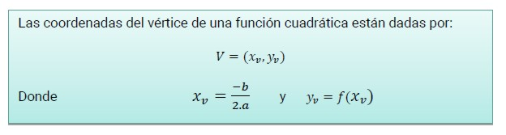
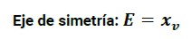
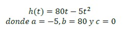
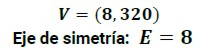
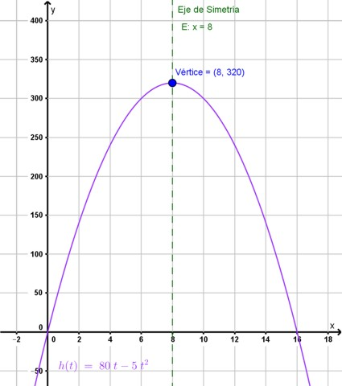

Vértice
Volvamos al problema de inicio y respondamos a algunas de las preguntas que se plantearon allí:
¿Llegará a verse el destello desde la base naval?
El problema plantea que el destello debe encontrarse a una altura no menor a 195 m. El vértice de la parábola está en el punto (8,320): esto indica que a los 8 segundos estaba a 320 m, que es el punto máximo que alcanza.
Este dato lo obtenemos de la tabla y observando la gráfica, pero también podemos calcularlo.

El vértice divide en dos ramas simétricas a la gráfica de la función cuadrática y el valor de su abscisa determina una ecuación de una recta vertical (E), paralela al eje de las ordenadas, llamada eje de simetría.

Nuestro problema está modelizado por la siguiente fórmula:

|
Si calculamos el vértice: Obtenemos que el Vértice es:  |
 |


El siguiente video te permitirá comprender como encontrar el vértice y eje de simetría
Obra publicada con Licencia Creative Commons Reconocimiento Compartir igual 4.0